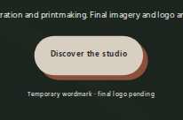
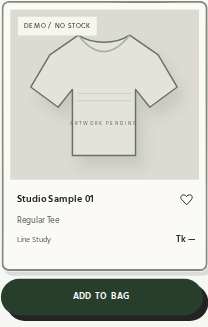
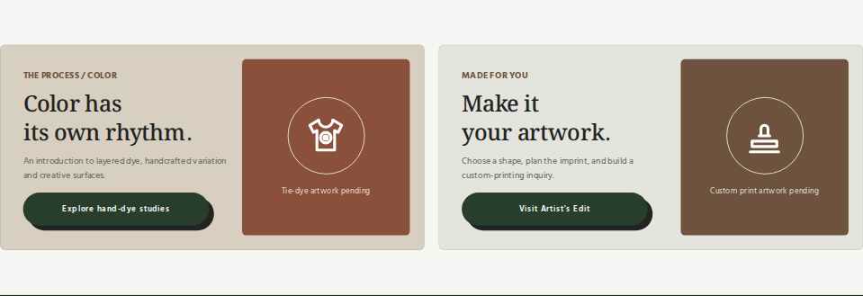
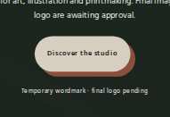
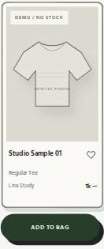
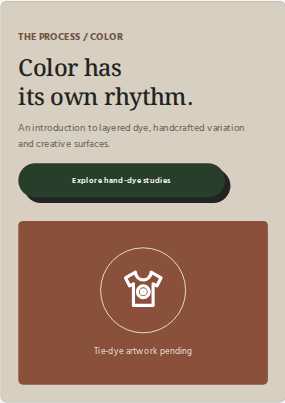
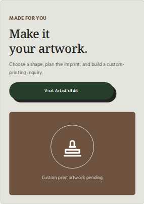

CHAPCHITRA / REAL BROWSER REVIEW / OCTOBER 2026
Polaroid Frame & Editorial Button Corrections
Actual Chromium captures of the revised standalone CHAPCHITRA storefront. The single variable-width Polaroid ink border is muted; its frame shadow is now Light Gray. Hero Slide 1 has a Terracotta shadow, and both editorial CTAs use approved Press Green pills.
Desktop — 1440px

Hero 1 · Beige + Terracotta #8A503B

Polaroid · muted ink + Light Gray #D9DCD7
Ink contour is one even-odd vector path with variable thickness, not a uniform CSS stroke or a second outline.
Frame offset: 4px right / 5px down. The independent green ADD TO BAG pill uses its existing Graphite shadow.

Both editorial banners · Press Green faces, Graphite #232323 shadows, no arrows
Mobile — 390px

Hero Slide 1

Product frame + unchanged Add to Bag

Tie-Dye · Explore hand-dye studies

Artist's Edit · Visit Artist's Edit
Tablet 820px and narrow mobile 320px were also browser-tested for button label fit, context shadows, responsive grids and shopping interactions. These image comparisons show the requested elements rather than unrelated sections.